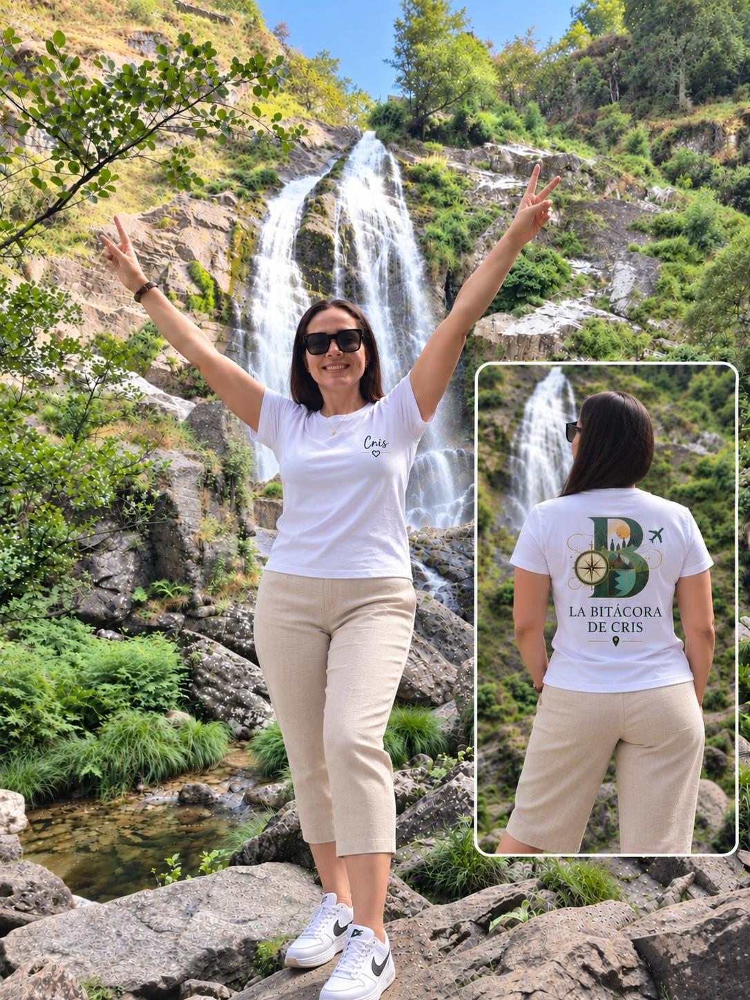
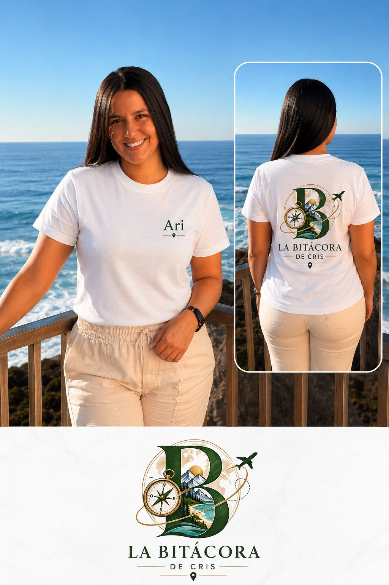

Nuestra historia
La Bitácora de Cris nace de las ganas de compartir los viajes que más nos gustan: rutas con historia, naturaleza y pueblos con encanto, cuidadas hasta el último detalle.
Las guías

Exploradora de destinos, creadora de experiencias y apasionada por compartir lugares que dejan huella. Con espíritu de liderazgo, curiosidad y una mirada propia, convierte cada viaje en una historia que merece ser contada.

Apasionada por las personas, las buenas conversaciones y los momentos que se disfrutan sin prisa. Atenta, resolutiva y con una energía positiva que contagia, encuentra en cada excursión una oportunidad para cuidar, compartir y hacer que los demás se sientan a gusto.
Viaja. Explora. Vive. Recuerda.